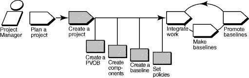

Overview
The following diagram illustrates the workflow for managing UCM projects. Shaded areas are discussed in this tool
mentor.

This tool mentor is applicable when running Microsoft Windows. It describes features available in full ClearCase.
Terminology
There are some differences between RUP terminology and that used by ClearCase. The following definitions of
tool-specific terminology should help clarify the differences.
-
Activity: A ClearCase activity maps closely to a RUP Work Order. Do not confuse it with the RUP concept of an Term Definition: activity.
-
Configuration Management: ClearCase's use of the term Configuration Management refers to Version Control and
Build Management. RUP uses the IEEE and ISO definitions of Term Definition: configuration management (CM), which also includes Change
Management as part of CM.
-
Configuration and Change Management: Both ClearCase and Rational ClearQuest refer to Configuration and
Change Management, which is similar to the RUP definition of Term Definition: configuration management. RUP uses these terms
synonymously.
-
Project: A ClearCase project maps to the RUP Project Repository.
Tool Steps
To set up a UCM project:
-
Create a repository for storing project information
-
Create components that contain the set of files the developers work on
-
Create baselines that identify the versions of files with which the developers start their work
-
Create the UCM project
ClearCase projects require a project VOB (PVOB), which is used to store UCM objects and related information.
-
To start the VOB Creation Wizard, from the Windows task bar, click Start > Programs > Rational Software
> Rational ClearCase > Administration > Create VOB.
-
At the first screen, be sure that the UCM project data check box is selected.
-
Select Help, which provides guidance for completing the wizard.
 Refer to the topic VOB
Creation Wizard in ClearCase online Help for detailed information. Refer to the topic VOB
Creation Wizard in ClearCase online Help for detailed information.
Components are used to group a set of related directory and file elements within a UCM project. Typically, you develop,
integrate, and release the elements that make up a component together. A project must contain at least one component,
and it can contain multiple components. Projects can share components.
You can create a component with the VOB Creation Wizard:
-
Click Start > Programs > Rational ClearCase Administration > Create VOB.
-
At the first step of the wizard, check Create VOB as a UCM component. The new VOB can be used as a component
by UCM projects.
You can also migrate existing data stored in VOBs to UCM projects by converting existing VOBs into components:
-
Navigate to ClearCase Project Explorer. From the Windows task bar, click Start > Programs > Rational
Software > Rational ClearCase > Project Explorer.
-
Select the root folder of the PVOB.
-
Click Tools > Import VOB. The Import VOB dialog box appears. In the Available VOBs list, select
the VOB that you want to make into a component.
-
To move the VOB to the VOBs to Import list, click Add.
-
When you are finished, click Import.
 See the section titled "Creating
Components" in the ClearCase manual titled Managing Projects. See the section titled "Creating
Components" in the ClearCase manual titled Managing Projects.
3. Create baselines that identify the versions of files with which the developers
start their work
Baselines identify one version of every element of a component, representing a stable source configuration from which
to start work. Their use is required by the UCM model to access files and directories of a component.
When ClearCase components are created from scratch, they are created with an initial baseline.;
If you are converting a base ClearCase VOB into a component, you can make baselines from existing labeled versions.
Check whether the latest stable versions are labeled. If they are not, you need to create a label type and apply it to
the versions that you plan to include in your project.
For detailed information, refer
to the topic Using the Apply Label Wizard in ClearCase online Help.
To create a baseline from the set of versions identified by a label type:
-
In ClearCase Project Explorer, select the root folder for the PVOB. Click Tools > Import Label.
The Import Label Wizard appears.
-
In the Available Components list, select the component that contains the label from which you want to create
a baseline.
-
To move the component to the Selected Components list, click Add.
-
Click Next when finished.
-
In Step 2 of the Import Label Wizard, select the label type that you want to import. Enter the name of the baseline
that you want to create for the versions identified by that label type. Select the baseline's promotion level.
Click Finish.
This procedure creates one of the project's foundation baselines, which identify the versions of files with which the
developers start their work.
Refer to the Create and manage
baselines topics in ClearCase online Help.
After creating a project VOB and the components you will use, you are ready to create the UCM project. To do this, you
must supply a project name, and identify project components and baselines for the project. ClearCase provides a Create
New Project Wizard that walks you through the steps of this procedure.
-
In the ClearCase Project Explorer, select the root folder of the PVOB. Click Create New Project from the
pop-up menu to start the wizard.
-
Follow the steps presented by the wizard. Help for each step is available by clicking the Help button on
each screen.
-
At Step 3 of the wizard, Add the component baselines to be used in this project, specify the baselines you created
in procedure 3 above.
-
The next two steps of the wizard ask you to specify detailed configuration information for your project, including
development policies, and whether to enable the project to work with a Rational Change Request database.
Configuration can be tailored to meet your project's specific needs. See the online Help for a description of all
available options.
Refer to the following topics in
ClearCase online Help for an overview of this procedure:
-
Workflow for creating projects
-
New Project Wizard
|